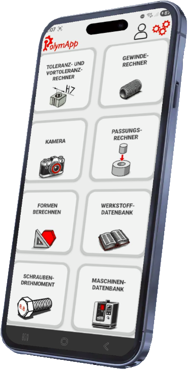

The App for CNC Professionals
ISO tolerances, threads, materials, and calculations -
all in one app. Fast. Offline. Practical.

What is PolymApp?
PolymApp is the all-in-one app for CNC professionals - developed from the hands-on experience of a polymechanic.
It combines all important technical references and calculators in one app:
ISO tolerances, threads, reliefs, materials, surface specifications, and much more -
always available, even offline.
Your Advantages with PolymApp
- Time-saving - Get answers and calculations in seconds instead of searching manually.
- All in one place - No more manuals, no multiple apps.
- Practical - Developed for the real workshop and office environment.
- Offline usable - Access anytime, even without internet.
- Smart - Camera detects tolerances directly from drawings.
- Continuously expanded - New functions and content are added regularly.
Why PolymApp?
Because efficiency is crucial in everyday work.
PolymApp delivers precise information, clearly structured and without unnecessary clutter.
A glance or a photo is enough - the corresponding ISO tolerances including coating thickness
appear instantly.
Developed by a user for users: reliable, fast, and perfectly adapted to the needs of CNC professionals.
Answers in Seconds
Whether missing tolerances, fits, or surface specifications:
PolymApp guides you to the solution in seconds - clearly, understandably, and practically.
Continuously New Features
PolymApp is constantly evolving. From a simple material database, it became
a powerful tool with material comparisons, suggestions for similar materials,
cutting values, machinability data, and much more.
Features
- Tolerance & Pre-tolerance Calculator - including coating adjustments.
- Camera - Take photos of drawings, tolerances recognized automatically.
- Thread Calculator - all dimensions for standard threads including tolerances.
- Fit / Reverse Calculator - quickly find suitable fits.
- Surface Specifications - all important roughness values at a glance.
- Material Database - over 400 materials with properties, cutting data, machinability, and more.
- Machine Database - manage machines and tools.
- Reliefs - sketches and dimensions at a glance.
- Cutting Data Calculator - calculate spindle speed, feed, and machining time.
- Shape Calculator - easily calculate triangles, circles, and polygons.
- G / M Codes - standard commands for Fanuc, Heidenhain, or Siemens.
Download

Android

iOS